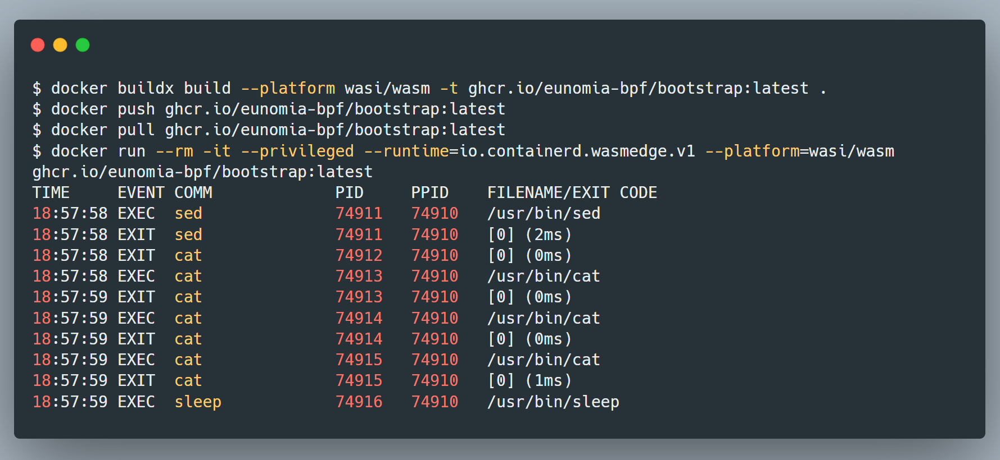

Securing and Simplifying eBPF Deployments with WebAssembly
Extended Berkeley Packet Filter (eBPF) and WebAssembly (Wasm) are emerging as powerful technologies for enhancing system capabilities in cloud-native environments. However, deploying eBPF programs at scale presents challenges. This blog explores how integrating eBPF programs with WebAssembly runtimes like WasmEdge addresses these challenges by enabling lightweight, portable, and secure execution of eBPF workloads. The integration streamlines eBPF deployment in Kubernetes through Wasm's pluggable model while improving security with fine-grained access controls. Examples also demonstrate enhanced observability, debugging and access control for Wasm through this integration of eBPF and Wasm.
introduction
Extended Berkeley Packet Filter (eBPF) and WebAssembly (Wasm) are emerging technologies that are playing important roles in modern cloud-native ecosystems. This blog post explores how these technologies can be combined to enhance system observability and security in innovative ways.
eBPF provides a powerful yet lightweight framework for running sandboxed programs securely within the Linux kernel. It enables dynamic and programmable extensions for tasks like networking, tracing, and security. However, deploying eBPF programs at scale comes with its own set of challenges around permissions, lifecycle management, and pluggability.
WebAssembly, on the other hand, is designed for portability, security, and high performance. Its secure sandboxed execution model and emerging interfaces like WASI are well-suited for cloud-native applications and plugin systems. This blog post discusses how integrating eBPF programs with WebAssembly runtimes like WasmEdge and wasm-bpf can address many of the challenges of deploying eBPF in containerized environments like Kubernetes.
The post provides background on eBPF and Wasm, examines the deployment challenges of eBPF in Kubernetes, and explains how a webassembly runtime and toolchain like WasmEdge and wasm-bpf work to simplify eBPF deployments while also enhancing security. It explores examples of leveraging the integration for improved observability, debugging, and access control. Overall, the combination of these technologies opens up new possibilities for advanced yet lightweight capabilities across cloud-native ecosystems.
Table of Contents
autoauto- Securing and Simplifying eBPF Deployments with WebAssemblyauto - introductionauto - Table of Contentsauto - Background: eBPF and Wasm in Cloud-Native Ecosystemsauto - How can Wasm enhance eBPFauto - Current deploy models of eBPFauto - Summary: challenges for eBPF in Kubernetesauto - How WebAssembly can bring to eBPF deployments in Kubernetesauto - Wasm-bpf: A Paradigm Shift in eBPF Deploymentsauto - Enhancing eBPF Deployment: Efficiency and Easeauto - Elevating Security in eBPF Deploymentsauto - trade offsauto - Running eBPF with WebAssembly in Docker Containersauto - Streamlining eBPF Development with Wasm-bpfauto - Examples of wasm-bpfauto - Challenges of eBPF for Wasm: Bridging Architecture and Kernel Dependenciesauto - How it works: Wasm-bpfauto - Wasm with userspace eBPFauto - Wasm + eBPF + LLMauto - How can eBPF enhance Wasm: WASI and Debuggingauto - Enhancing WASI access control with eBPFauto - Wasm runtime Debug with eBPFauto - Other possibilitysauto - conclusion and takeawaysauto - referenceautoauto
Background: eBPF and Wasm in Cloud-Native Ecosystems
In the cloud-native ecosystem, eBPF (Extended Berkeley Packet Filter) and WebAssembly (Wasm) serve as emerging technologies facilitating advanced operational capabilities.
eBPF (Extended Berkeley Packet Filter) enables dynamic and secure programming within the Linux kernel, enhancing networking, observability, tracing, and security capabilities efficiently in modern cloud-native environments. This technology allows for the injection of bytecode into the kernel at runtime, which the kernel can then verify and execute in response to various events.
WebAssembly (Wasm), on the other hand, is a binary instruction format and a compilation target for high-level languages, enabling developers to run sandboxed executable code in web browsers and server-side virtual machine. Wasm is designed to be portable, secure, and execute at near-native speeds, making it an ideal runtime for web applications and increasingly for server-side containerized applications.
The differences between eBPF and Wasm: Wasm operates within a sandboxed environment, emphasizing security. It incorporates run-time checks for arbitrary code execution, which, while bolstering safety, introduces some performance overhead. Additionally, Wasm boasts a robust language support and ecosystem, making it versatile and conducive to various applications. Contrastingly, eBPF is finely tuned towards performance optimization. It employs static verification methods, minimizing run-time checks as the functionalities are predetermined before execution. eBPF is predominantly used with small C programs, emphasizing its focus on performance and efficiency.
In essence, while both technologies are instrumental in enhancing the execution of code, Wasm leans more towards flexibility and security, whereas eBPF focuses on performance and efficiency. This delineation marks the fundamental differences in their design philosophies and application domains.
WasmEdge is a lightweight and high-performance Wasm runtime that has been integrated into Docker CLI, allowing for seamless deployment of both containerized and Wasm-based applications within the same infrastructure. This integration underscores the cloud-native commitment to interoperability and the ability to abstract underlying infrastructure complexities away from developers and operators. WasmEdge can also be used as a plugin system for mutiple languages.
How can Wasm enhance eBPF
In the following part, we will discuss how WebAssembly can help enhance the deployment of eBPF programs.
Current deploy models of eBPF
In large-scale projects, like cilium, pixie, tetragon, falco, the prevalent strategy is to closely integrate the monitoring or management tools within the core application, often referred to as the "control plane."
An alternative to this integration, like bumblebee, inspektor-gadget, bpfd, is the use of Remote Procedure Calls (RPCs) to communicate between the control plane application and a dedicated BPF daemon. This is mostly used for deploying specific eBPF tools or scripts, they are usually in a smaller size.
The first approach of deploying eBPF programs allows for a seamless interaction with the system's internals, providing an efficient means of observation and manipulation of low-level operations.
However, this tight integration is not without its drawbacks. If you use traditional containers to deploy smaller eBPF tools or probes, it's heavy weight and resource consuming.
Another significant challenge is the application requires extensive permissions. The current eBPF access control model often require CAP_SYS_ADMIN capability for accessing all features. However, CAP_SYS_ADMIN carries inherent risks, particularly to containers, due to its extensive privileges. Despite more capabilities like CAP_PERFMON and CAP_BPF were introduced to allow more granular control over BPF operations, it also lacks namespace constraints, meaning it can access all kernel memory rather than being container-specific.
Moreover, the complexity introduced by the need to manage multi-user environments. This can lead to conflicts where one eBPF program overrides another, resulting in silent failures or unpredictable behavior.
Another approach is the use of Remote Procedure Calls (RPCs) to communicate between the control plane application and a dedicated BPF daemon. This BPF daemon acts as an intermediary, managing the BPF lifecycle and permissions. While this decouples the BPF functionality from the application, it introduces its own set of issues.
The daemon delegation model implies an additional critical component in the production environment, which increases the risk of failures. Troubleshooting and debugging become more challenging when another layer is involved.
Moreover, maintaining consistency during updates is another pain point. When new kernel features are introduced, not only does the kernel dependency need to be managed, but the daemon itself also requires updates and deployment, which can slow down the adoption of new capabilities. This model also imposes an additional support burden as loaders have to be compatible with both tight integration and daemon delegation scenarios. Ensuring that the application and the daemon are upgraded or downgraded atomically to avoid compatibility issues is also a complex task. The problem is further compounded when considering that operating system distributions or cloud providers may each introduce their proprietary daemons, leading to a fragmented ecosystem.
In summary, while tight integration offers efficiency and direct control, it requires careful coordination and broad permissions. On the other hand, daemon delegation provides a layer of abstraction at the cost of additional complexity and potential delays in leveraging new features. Each model carries its own set of "cons," and the choice between them would depend on the specific requirements and constraints of the project in question.
Summary: challenges for eBPF in Kubernetes
Deploying eBPF in Kubernetes clusters also adds another layer of complexity. To summarize the challenges of deploying eBPF with different models:
-
Security Risks with Privileged Access: eBPF applications necessitate elevated access levels in Kubernetes, often requiring privileged pods. The minimum requirement is CAP_BPF capabilities, but the actual permissions may extend further, depending on the eBPF program type. The broad scope of Linux capabilities complicates the restriction of privileges to the essential minimum. This can inadvertently introduce security vulnerabilities, for instance, a compromised eBPF program could extract sensitive data from the host or other containers and could potentially execute in the host namespace, breaching container isolation.
-
Compatibility Issues with eBPF Hooks and Kernel Versions: The eBPF infrastructure in Linux kernels can have limitations, such as certain hooks not supporting concurrent multiple programs. Without a standardized method to handle the interplay between various applications, coordination becomes more intricate, potentially leading to conflicts. While CO-RE (Compile Once - Run Everywhere) enhances portability across various kernel versions, disparities in feature support, such as 'perf event' and 'ring buffer', remain due to kernel version differences, affecting cross-version compatibility.
-
Complex Lifecycle and Deployment Management: Orchestrating the lifecycle of eBPF programs in Kubernetes is complex. Deployment typically involves creating a DaemonSet, which increases architectural complexity and security considerations. The process includes writing a custom agent to load eBPF bytecode and managing this agent with a DaemonSet. This necessitates an in-depth understanding of the eBPF program lifecycle to ensure persistence across pod restarts and to manage updates efficiently. Using traditional Linux containers for this purpose can be counterproductive and heavy, negating the lightweight advantage of eBPF.
-
Challenges with Versioning and Plugability: Current eBPF deployments in Kubernetes often embed the eBPF program within the user space binary responsible for its loading and operation. This tight coupling hinders the ability to version the eBPF program independently of its user space counterpart. If users need to customize eBPF programs, for instance, to track proprietary protocols or analyze specific traffic, they must recompile both the eBPF program and user space library, release a new version, and redeploy. The absence of a dedicated package management system for eBPF programs further complicates management and version control.
There is not a single solution to all these challenges, but maybe we can leverage the advantages of WebAssembly (Wasm) to address some of these issues. In the next section, we will discuss how Wasm can help improve the deployment of eBPF in Kubernetes.
How WebAssembly can bring to eBPF deployments in Kubernetes
WebAssembly (Wasm) could address some of these challenges:
-
lightweight: Wasm is designed to be lightweight, portable, and secure, making it an ideal runtime for cloud-native environments. Wasm workloads can seamlessly run alongside containers, easing integration into the current infrastructure. With its lightweight containers — mere 1/100th the size of typical LXC images — and rapid startup times, Wasm addresses eBPF’s deployment headaches.
-
Fine-Grained Permissions: Wasm's runtime environment prioritizes security with a deny-by-default mode, a stark contrast to the broad permissions eBPF necessitates. By leveraging WebAssembly System Interface (WASI), eBPF deployments gain the advantage of fine-grained permission controls. This setup not only tightens security by restricting access to crucial kernel resources but also creates a configurable environment where permissions are granted explicitly and judiciously.
-
Portability and Isolation: Wasm is designed to run in a portable, isolated environment, which could simplify deployment and reduce the risk of programs interfering with one another. with Wasm for eBPF, we can build an abstraction layer to improve the portability of eBPF programs, and also provide a isolated environment for eBPF programs to run in. With userspace eBPF runtime like bpftime, we can also monitor the userspace with same toolchains, but without kernel version support and without root priviledge.
-
Lifecycle Management: Wasm's design inherently facilitates better lifecycle management tools and practices. Kubernetes can leverage existing container orchestration tools to manage Wasm applications, streamlining the process. And also, Wasm runtime can use the WASI-like interface to manage the eBPF programs inside the kernel.
-
Versioning and Update Management: With Wasm plugins, eBPF programs can be versioned and updated independently of their user space counterparts. By treating eBPF packages as OCI images within Wasm modules, packaging, versioning and updating become more manageable. This enables the sandboxing of eBPF programs separate from the user space, allowing for a modular and flexible approach in tooling, particularly in observability.
In summary, while eBPF offers powerful capabilities for Kubernetes, it comes with significant challenges related to security, manageability, and operational complexity. WebAssembly could provide solutions to these challenges by offering a more secure, isolated, and manageable environment.
Wasm-bpf: A Paradigm Shift in eBPF Deployments
Wasm-bpf is a WebAssembly eBPF library, toolchain and runtime powered by CO-RE(Compile Once – Run Everywhere) libbpf. It allows the construction of eBPF programs into Wasm with little to no changes to the code, and run them cross platforms with Wasm sandbox. Wasm-bpf can be used as a plugin for WasmEdge, a high-performance Wasm runtime optimized for cloud-native environments, to integrate with Kubernetes. The project allows you:
Create Wasm-based eBPF control plane applications
Wasm-bpf empowers developers to create Wasm-based eBPF control plane applications. These applications can tap into the control and communication mechanisms eBPF provides, but with the added advantages of Wasm's lightweight and secure environment. The result is a robust control plane capable of intricate networking and security operations, all managed with Kubernetes' native tooling.
Enable Streamlined Management of eBPF programs in k8s pods with lightweight Wasm container
With Wasm-bpf, managing eBPF programs becomes an integrated part of Kubernetes' orchestration:
- Lightweight Containers: Utilizing Wasm containers that are a fraction of the size of traditional LXC images, Wasm-bpf ensures that eBPF programs can be deployed rapidly and with less overhead.
- Kubernetes Pods: eBPF programs are deployed as Wasm modules within k8s pods, aligning with existing container orchestration practices and enhancing manageability.
-
WasmEdge Integration: As a plugin for WasmEdge, Wasm-bpf benefits from a high-performance runtime optimized for Kubernetes, ensuring seamless cloud-native integration.
-
Enables Wasm plugin in eBPF core applications
It allows dynamic loading and unloading of eBPF programs and their control plane(Userspace) code, promoting a modular and flexible approach towards system observability and interactions. The user can write their own eBPF programs and data processing codes, and load them into the observability agents, without the need to recompile and redeploy it. This allows for a more agile and efficient development process, where eBPF programs can be updated independently of the core application for complex data processing and private protocol analysis.
Enhancing eBPF Deployment: Efficiency and Ease
Wasm-bpf addresses the deployment challenges by offering a runtime that's optimized for eBPF within a Wasm lightweight container:
- Size and Performance: The Wasm containers are just 1% the size of standard LXC images, coupled with a fast startup time for eBPF programs, ensuring quick deployments. Wasm also has a near native runtime performance.
- Cross-Platform Portability: With CO-RE, these eBPF programs are not just portable across different platforms but also across kernel versions, obviating the need for kernel-specific adaptations. With user space eBPF runtime, no kernel eBPF support is needed.
- Version Control: It allows for independent versioning and updating of eBPF programs, enabling them to be treated as OCI images within Wasm modules, thereby simplifying versioning and updates.
Elevating Security in eBPF Deployments
Wasm-bpf not only makes deployment easier but also significantly safer:
- Configurable WASI Behavior: It provides a configurable environment with limited eBPF WASI behavior, enhancing security and control. This allows for fine-grained permissions, restricting access to kernel resources and providing a more secure environment. For instance, eBPF programs can be restricted to specific types of useage, such as network monitoring, without the need for broad permissions.
- Access Control: it can also apply RBAC to control the access of eBPF programs easily.
- Sandboxed Environment: By sandboxing the user space, Wasm-bpf enables the safe execution of eBPF programs, avoiding the risks associated with privileged access levels in traditional deployments. This can also help enable eBPF plugins in observability agents.
In essence, Wasm-bpf is crafted to mitigate the inherent challenges faced when deploying eBPF in Kubernetes environments. It leverages the strengths of WebAssembly to make eBPF deployments not only easier and more efficient but also significantly more secure.
By encapsulating eBPF programs in lightweight, portable, and secure Wasm modules, Wasm-bpf streamlines the lifecycle and versioning management, offering a sophisticated solution that aligns with the dynamic and scalable nature of cloud-native ecosystems. As Kubernetes continues to evolve, Wasm-bpf stands ready to play a critical role in simplifying and securing eBPF deployments across the cloud-native landscape.
trade offs
While Wasm-bpf presents a promising solution for deploying eBPF programs within Kubernetes, it's essential to consider the trade-offs and limitations that come with this new approach:
-
Library Portability:
Existing libraries like libbpf and libbpf-rs need to be ported to work within the Wasm environment. This requires additional development effort and could introduce compatibility issues or feature limitations.
-
Learning Curve:
Developers may need to learn new language SDKs tailored for Wasm. This investment in time and resources can be significant, especially for teams already accustomed to existing eBPF toolchains.
-
Feature limited:
eBPF features available within the Wasm environment might be limited compared to those in the native Linux kernel eBPF. Some advanced eBPF functionalities may not be fully supported or may require significant workarounds to be operational in Wasm.
-
Kernel Version Support:
Even though Wasm-bpf leverages CO-RE to enable cross-platform compatibility, the underlying eBPF programs may still require specific kernel version support. This could limit the deployment of certain eBPF programs to environments with the requisite kernel versions.
-
Performance Overheads:
Running eBPF programs in a Wasm sandbox may introduce slightly performance overheads due to additional abstraction layers and the limitation of WebAssembly itself. This should be acceptable for most use cases but might be a bottleneck for performance-critical applications.
-
Complexity in Debugging:
Debugging issues across the Wasm and eBPF boundary might become more complex. The encapsulation provided by Wasm's sandbox can also obscure problems that would be more apparent in a native environment.
-
Ecosystem Maturity:
The Wasm ecosystem, particularly in the context of eBPF, is relatively new compared to the mature tooling available for native eBPF. This can lead to challenges in finding support, documentation, and community-tested practices.
The introduction of Wasm-bpf is undoubtedly an exciting development, yet it's important to weigh these trade-offs when considering its adoption. For organizations with existing eBPF workloads or those looking to exploit the full range of eBPF capabilities, a careful evaluation of the potential impacts on performance, compatibility, and developer productivity is necessary.
Running eBPF with WebAssembly in Docker Containers
In the pursuit of harnessing the power of eBPF within lightweight containers, the integration of WebAssembly (Wasm) emerges as a significant advancement. The command-line image depicted showcases the process of utilizing eBPF tools within a WebAssembly-based Docker container, enabling the real-time monitoring of process execution and exits directly in the kernel.
WebAssembly containers offer a lighter and more configurable alternative to traditional LXC (Linux Containers). The commands demonstrate the ease with which a user can build, push, pull, and run eBPF tools in this environment, mirroring the familiar workflow of standard Docker commands but with the added benefits of Wasm's agility and security features.
Furthermore, this approach facilitates the use of container tools and Open Container Initiative (OCI) storage to efficiently manage eBPF programs. With these tools, developers can now achieve unparalleled control over, and interaction with, eBPF and a wide array of system resources that eBPF can tap into, paving the way for sophisticated containerized applications that are both performant and secure.

Streamlining eBPF Development with Wasm-bpf
Wasm-bpf allows developers to convert eBPF programs into Wasm modules with minimal code changes. The development experience with Wasm-bpf mirrors that of the traditional libbpf-bootstrap process. This means that developers who are accustomed to working with libbpf can transition to Wasm-bpf with ease. The goal is to reduce friction in porting existing eBPF tools to the Wasm platform.
Over 10 tools from the BCC (BPF Compiler Collection) have been successfully ported, along with a variety of use cases in languages like C/C++, Go, and Rust.
Examples of wasm-bpf
With wasm-bpf, developers can now leverage eBPF for a wide spectrum of scenarios, ranging from observability to networking and security, with seamless transitions between them.
- Observability with Uprobes
Uprobes, or user-space probes, are crucial for monitoring the behavior of user-space applications. By instrumenting specific parts of the code, developers can receive valuable insights into the application's performance and behavior. wasm-bpf enables the insertion of uprobes in a more streamlined manner, making observability tasks less cumbersome and more integrated into the development process.
- Networking with XDP
eBPF shines in the networking domain, and XDP (eXpress Data Path) is one of its star features. It allows for high-performance packet processing at the earliest possible point in the software stack. With wasm-bpf, XDP programs can be written and deployed with the flexibility and portability that WebAssembly offers, opening new doors for network function development.
- Security with LSM
Linux Security Modules (LSM) are a framework that provides various hooks for security checks within the Linux kernel. eBPF has been increasingly used to extend LSM capabilities without the need for kernel changes. wasm-bpf stands to simplify the development of these security-centric eBPF programs, making it easier to build complex security policies and enforce them within the kernel.
These examples signify just the tip of the iceberg when it comes to the versatility of eBPF use cases facilitated by wasm-bpf. The ability to deploy eBPF programs across different domains without significant rewrites or adjustments is a testament to the power of wasm-bpf.
Challenges of eBPF for Wasm: Bridging Architecture and Kernel Dependencies
The integration of eBPF with WebAssembly (Wasm) within Kubernetes is a promising approach but comes with its own set of challenges:
- Porting Libraries and Preparing Toolchains:
For different programming languages, there are corresponding libraries to interface with eBPF. These need to be ported to work with Wasm:
- C/C++:
libbpfis the standard library for working with eBPF in C/C++. Adapting this to work within the Wasm environment requires ensuring compatibility with Wasm's execution model. - Rust:
libbpf-rsprovides Rust bindings forlibbpf. These bindings must be made compatible with Wasm to maintain performance and functionality. -
Go: The Go language has its own eBPF library,
cilium/go. This too must be adapted for a Wasm runtime, which can be non-trivial given Go's runtime and garbage collection features. -
Differences in Data Layout Between Wasm and eBPF:
Wasm currently operates in a 32-bit environment, whereas eBPF is designed for a 64-bit architecture. This difference in data layout can lead to complications like different struct sizes, different pointer widths, particularly when handling data structures that are designed with 64-bit systems in mind.
To address this, toolchains are utilized to generate bindings that can translate between the two architectures. This minimizes the need for serialization and deserialization, which can degrade performance.
- Portability for eBPF:
eBPF's functionality can depend heavily on the Linux kernel version, but newer features often requiring the latest kernel releases.
CO-RE: This feature allows eBPF programs to be more portable across different kernel versions by providing a pointer relocation at runtime that doesn't require recompilation. This can help mitigate kernel compatibility issues.
A compatible layer for kernel features: Some eBPF features may not be supported in all kernel versions. For instance, the ringbuf feature is only available in kernel versions 5.4 and above, while perf_event is available in kernel versions 4.9. This can be addressed by providing a compatible layer that emulates the missing functionality.
Userspace eBPF Runtime: For systems where updating the kernel isn't feasible, a userspace eBPF runtime can be employed. This allows eBPF programs to run without direct kernel support, which is crucial for environments where kernel modifications are restricted.
Once these hurdles are overcome, developers can leverage the power of eBPF in a more flexible and secure manner, enabled by the capabilities of Wasm.
How it works: Wasm-bpf
The wasm-bpf project essentially wants to treat the Wasm sandbox as an alternative user-state runtime space on top of the OS, allowing Wasm applications to implement the same programming model and execution logic in the sandbox as eBPF applications that normally run in the user state.
Wasm-bpf would require a runtime implementation like the WASI, and some runtime libraries compiled to Wasm bytecode inside the sandbox to provide complete support. It also need some toolchains to package the eBPF kernel code and userspace part into an application.
Wasm-bpf provides the following mechanishs:
- A Wasm module can operate multiple eBPF programs.
- An instance of an eBPF program can also be shared by multiple Wasm modules
- The ability to
dynamically loadeBPF programs from the Wasm sandbox into the kernel, select the desired mount points to mount them, unmount them, control the complete lifecycle of multiple eBPF bytecode objects, and support most eBPF program types. - Bi-directional communication with the kernel via multiple types of eBPF Maps, and
share memory mapsbetween Wasm and kernel. - Efficient sending of messages from the kernel state to the user state (and vice versa) via
ring bufferingand perf event polling. - It can be adapted to most application scenario that uses eBPF programs, and can evolve and extend as kernel features are added, without requiring changes to the Wasm VM's system interface.
To develop an eBPF program, we first need to compile the corresponding source code into bpf bytecode using the clang/LLVM toolchain, which contains the corresponding data structure definitions, maps and progs definitions. progs are program segments, and maps can be used to store data or for bidirectional communication with the user space. After that, we can implement a complete eBPF application with the help of the user state development framework and the loading framework. Wasm-bpf also follows a similar approach.
In the Wasm-bpf project, with the support of code generation techniques and BTF (BPF type format) information in the toolchain, all communications between Wasm and eBPF do not need to go through serialization and deserialization mechanisms. At the same time, the eBPF-Wasm development experience for user-state programs is improved by automatically generating skeleton (bpf code framework) and type definitions, just like the bpftool does.
Typically, a compiled eBPF-Wasm module is only about 90Kb and can be dynamically loaded into the kernel and executed in less than 100ms.
Wasm with userspace eBPF
Wasm with kernel eBPF enable more possibilities, but require kernel version or configure support and privilege to interact with Linux kernel.
We have a new general-purpose userspace eBPF runtime bpftime now, which doesn't rely on kernel and no privilege need to load the eBPF program and interact with it. It doesn't provide as many functions as kernel does, but can still use Uprobe and Syscall tracepoints to trace or observe applications in userspace. The uprobe and syscall tracepoints doesn't required mannual integration or restart the application been attached, it work just like kernel eBPF kprobe in userspace and compatible with kernel uprobe, but can speed up 10x than kernel uprobe. It may also work together with DPDK for network packet processing.
it's compatible with kernel eBPF toolchains and provides interprocess maps support, can run existing bcc tools and bpftrace in userspace without any modification.
Wasm + eBPF + LLM
2023 is the year of AI and large language models. With LLM, we are able to generate eBPF with natural language and run it inside the kernel as a safe kernel extension.
However, the AI generated code cannot be trusted, espically with a powerful priviledge and operations in the kernel. It could kill critical process, write data to any address of any process in user space (bpf_probe_write_user[5]), modify the return value of kernel functions, and even cause the kernel crash in some cases. This can lead to a very high security risks and is unacceptable.
The generated eBPF program needs a isolation runtime to deploy and run, but the LXC is heavy and slow to start, it also need a wide privilidge on exection eBPF program and lacks namespace constraints on what BPF can do in the kernel.
WebAssembly can be lightweight and cheaper than Docker or vm, and we are also able to do configurable fined-grain access control on what kind of eBPF programs can be loaded in kernel, what kind of attach event it can access with the WASI-like interface on eBPF, improve the security and performance of code-gen eBPF programs.
With our agent and GPT4, we can have a maximum 80% rate to generate tracing eBPF scripts in bpftrace successfully can correctly.
How can eBPF enhance Wasm: WASI and Debugging
WebAssembly (Wasm) has been a significant leap forward in the realm of portable binary instruction formats. Accoding to a survey in 2023, the top two features that WebAssembly needs to enhance are a better WASI (WebAssembly System Interface) and a better debugging toolchain. That's where eBPF may comes into play, offering solutions to elevate Wasm’s utility within the ecosystem.
Enhancing WASI access control with eBPF
The WebAssembly System Interface (WASI) is pivotal in managing how Wasm modules interact with the host system. Currently, WASI ensures that an accessed path is within an allowed list before granting access. This implementation, while functional, is not without its challenges. It can be error-prone, often relying heavily on code reviews to prevent security lapses. Furthermore, its configurability is limited, offering only directory-level granularity instead of more precise file-level control.
eBPF can significantly enhance WASI by introducing programmable access control within the Linux kernel. With eBPF's Linux Security Module (LSM) and seccomp capabilities, developers can write custom policies that offer granular control over what Wasm modules can access, down to specific files and operations.
Consider an example where there's a need to hook into directory removal operations to check permissions for a specific directory. Here, eBPF can be employed to intercept these operations at the kernel level and execute custom verification logic, providing a more robust and flexible access-control mechanism for WASI.
Besides LSM hooks in the kernel, we can also use uprobes or userspace eBPF runtime to dynamically control the behavior of WASI, hotpatching the vulnerabilities in wasm runtime, without mannually intergration in Wasm runtimes.
Wasm runtime Debug with eBPF
When it comes to debugging, Wasm's current tracing methodologies are somewhat rudimentary, lacking the depth required for intricate analysis. eBPF's uprobes (user-space probes) can bridge this gap by enabling detailed tracing of any user-space function invoked by a Wasm module, all without the need for additional code instrumentation.
For instance, memory allocation within a Wasm runtime like WasmEdge could be traced using uprobes. This would allow developers to gain insights into the memory behavior of their applications, identifying bottlenecks or leaks that could affect performance and stability.
Additionally, user-space eBPF runtimes such as bpftime facilitate rapid and powerful uprobes that don't require kernel modifications or root privileges, making the debugging process less invasive and more accessible.
Other possibilitys
- Bi-direction ring buffer may enable high speed interprocess communition between different vm instants
- AF_XDP for fast packet processing in Webassembly runtimes
conclusion and takeaways
In essence, eBPF's integration with Wasm paves the way for more sophisticated and secure system interfaces and debugging capabilities. Here is the 5 key takeaways for this blog:
- eBPF and WebAssembly are powerful emerging technologies that can be combined to enhance system capabilities, but eBPF deployment has challenges related to security, manageability and complexity.
- Wasm-bpf provides a runtime and toolchain that allows eBPF programs to be packaged and run as lightweight Wasm modules, addressing many of eBPF's deployment challenges in containers and Kubernetes.
- Running eBPF programs within the secure and isolated sandbox of Wasm improves security by enabling fine-grained permissions and access controls via WASI.
- Wasm-bpf streamlines the development process for eBPF by enabling independent versioning of programs as OCI images and providing Kubernetes integration.
- Beyond just deployment, eBPF can also enhance Wasm by improving WASI access controls and enabling powerful user-space program tracing with uprobes to aid debugging.
reference
- Wasm-bpf: https://github.com/eunomia-bpf/wasm-bpf
- WasmEdge eBPF plugin: https://github.com/WasmEdge/WasmEdge/tree/master/plugins/wasm_bpf
- bpfd: https://bpfd.dev/#why-ebpf-in-kubernetes
- Cross Container Attacks: The Bewildered eBPF on Clouds: https://www.usenix.org/conference/usenixsecurity23/presentation/he
- eBPF - The Silent Platform Revolution from Cloud Native: https://conferences.sigcomm.org/sigcomm/2023/files/workshop-ebpf/1-CloudNative.pdf
- Userspace full-featured eBPF runtime: https://github.com/eunomia-bpf/bpftime
- POSTER: Leveraging eBPF to enhance sandboxing of WebAssembly runtimes: https://dl.acm.org/doi/fullHtml/10.1145/3579856.3592831 - We have done similar works early this year